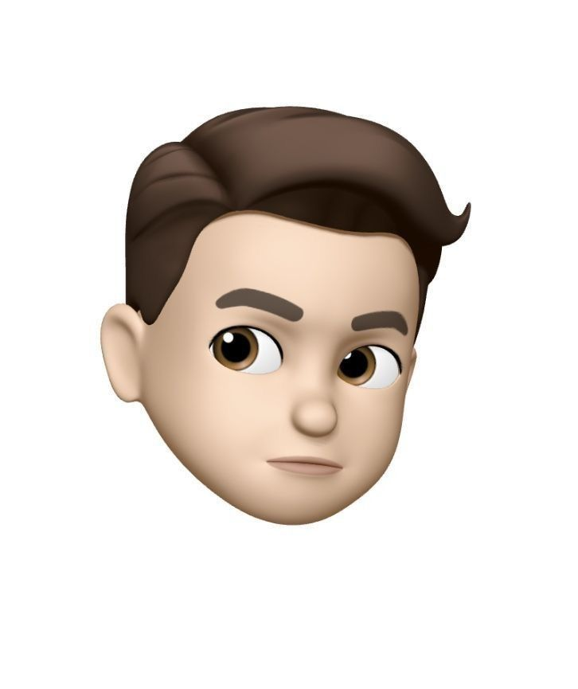

User Research
Persona
1

요.알.못 실용주의자
박지은
만 23세 | 지방에서 상경한 대학생 (자취 6개월차)
"식비를 아끼려고 마트에서 할인 상품을 샀는데, 요리할 줄도 모르고 관리도 안돼서 매번 한숨만 나와요. 야작 때문에 시간도 없는데..."
Life style
- 주중: 우주 공강 + 늦은 야작 (수면/체력 부족)
- 알바: 화, 토 4시간 입시미술 보조강사
- 주말: 과제, 카페 가기, 산책
Problem
할인 정보, 장보기 리스트, 레시피까지 식생활 전반의 관리를 한 번에 도와줬으면 한다.
Needs
식생활 절약에 특화된 나만의 비서가 필요하다. (제발 다 해줘)
요리 및 식재료
- 요리는 '귀찮고 어려운 것', 15분 이상 걸리면 포기.
- 냉장고 문을 잘 열지 않아 재료를 썩힘 (예: 대파)
2
바쁜 사회초년생

김민준
25세 | 판교 IT 스타트업 마케터 (2년 차)
"독립 생활은 만족하지만, 퇴근 후 '오늘 뭐 먹지?'라는 고민은 가장 큰 스트레스입니다."
Lifestyle
- 주중: 아침은 거름, 저녁은 배달/간편식
- 주말: 밀린 집안일, 휴식. 요리 시도 (장보기부터 부담)
- 소비: 배달/외식비 지출에 부담을 느낌.
Goals
- 건강한 식습관 (배달 줄이기)
- 지출 관리 (식비 줄여 저축)
- 시간 관리 (식사 준비 시간 단축)
Pain Points
- 메뉴 결정의 어려움
- 퇴근 후 장보기의 번거로움, 소량 구매 어려움
- 요리의 장벽 (1인분 계량, 재료 손질, 설거지)
- 식재료 낭비 (죄책감, 아까움)
3
현실주의 감각형 자취러
박서윤
만 25세 | 공과 대학원생 (1인 자취 3년차)
"귀가 후 배달앱 켜는 게 일상이지만, 지출 내역과 위장 기능 저하에 불안함을 느껴요. 식비는 아끼고 싶은데... 냉장고 재료 활용은 너무 귀찮아요."
Life style
- 주중/주말: 학교, 프로젝트, 야작. 생활 리듬 불규칙, 끼니 자주 거름.
Problem
식비 절약, 냉장고 관리, 레시피 추천을 한 번에 해결하고, 귀찮지 않게 내 생활패턴을 반영해주는 올인원 솔루션이 필요함.
Needs
- 냉장고 재료 기반 AI 자동 레시피 추천
- 빠른 장보기 리스트 생성
- 개인 특성 고려, 직관적인 UI
요리 및 식재료
- 건강 때문에 관심은 있으나 시간 부족 (간단한 메뉴 선호)
- 재료를 사두고 버리는 경우 잦음, 유통기한 관리에 스트레스